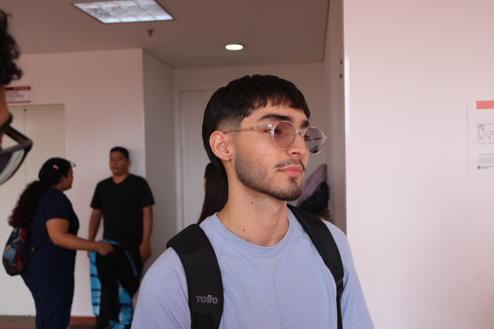

Estudiante de Ingeniería de Sistemas e Ingeniería Industrial
alejandro.aguilar@example.com | 3012854765 | Barranquilla, Colombia
Estudiante de doble programa en Ingeniería de Sistemas (6.º semestre) e Ingeniería Industrial (4.º semestre) en la Universidad Libre. Cuenta con bases en desarrollo de software, lógica computacional y optimización de procesos. Experiencia práctica en proyectos de IoT y desarrollo web, manejo de bases de datos (MySQL) y programación en Java y Python. Destacada participación en el capítulo estudiantil IEEE Robotics and Automation Society (RAS).
Gas Monitoring System (GMS) — Desarrollo e Integración
IEEE Student Branch — Capítulo RAS
Universidad Libre — Barranquilla